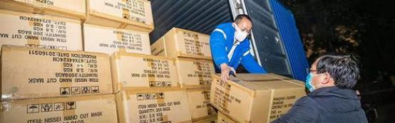
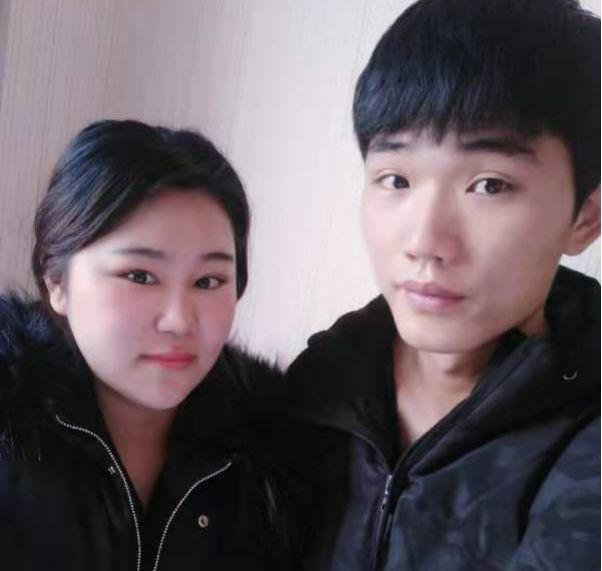
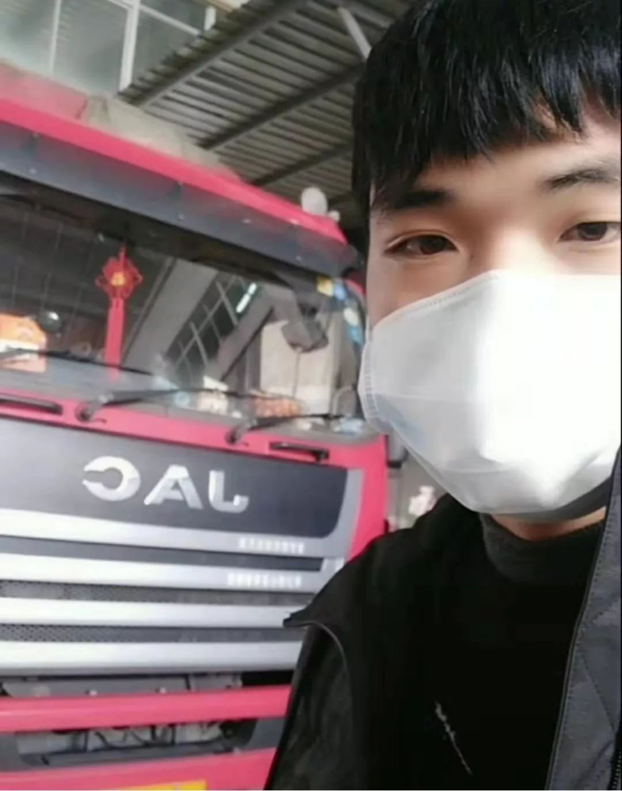

回不了家的武汉人
原文链接 备份链接 “我们这部分很模棱两可，不上不下的人，没有人管” “问题核心是对病毒的恐惧，变成了对湖北人的恐惧” 本文首发于南方人物周刊 文 | 本刊记者 张明萌 实习记者 梁翰文 编辑 | 蒯乐昊 全文约3645字，细读大约需 …


作者 | 江晓川
出品 | 棱镜·腾讯小满工作室
欢迎下载腾讯新闻APP，阅读更多优质资讯

“我不想让老婆跟我一起去武汉，但她死活不愿意下车。”
回想起几天前的经历，家住江苏无锡的90后货车司机顾师傅既有对妻子的愧意，更多还是感动。
大年初二晚，顾师傅接了一单生意：货车版“滴滴”——满帮集团联合爱德基金会，要给武汉捐赠消毒液，托人将物资从湖州运到武汉。
对老司机顾师傅来说，往返1400公里的路程算不上长，他知道湖北民众需要这些物资，但要进入疫区，家人们担心他的安全，通通反对。
最后，他还是说服家人，接下订单。但妻子不放心，坚持要和他一起，两人连夜启程，开始了农历新年后的第一单。
回到无锡后，他和妻子开始了为期14天的隔离生活，一岁多的女儿只能交给父母照料。
“我知道武汉是疫区，回来还隔离了，但我没什么后悔的。”这是他在隔离第三天对《棱镜》说的一句话。
也就在对话的同一天，在1月30日举行的发布会上，卫健委新闻发言人米锋表示，根据当前应对疫情工作需要，运送物资到湖北省的货车司机需要采取必要的防护措施，返回之后无发烧、咳嗽等症状，允许其继续运送物资。
以下是货车司机顾师傅的自述，为方便阅读，有调整和删节。

老婆放心不下，要我带她一起出车
我姓顾，家住江苏无锡，是一名货车司机。大年初三，我开车和老婆去了一趟武汉，给当地消防队送消毒水。现在我在家附近一家酒店做隔离，身体还好，14天的隔离结束后，我可以和老婆一起回家。
大年初二晚上，我在运满满app上看到有人下单，要马上送货去武汉。这个软件跟滴滴类似，要发货的人在软件上下单，司机接单。
我打电话过去问了问情况，对方要从浙江湖州发货到武汉，是满帮跟爱德基金会给武汉捐的消毒水。
我知道消毒水对武汉现在非常重要，但我还是有些犹豫，毕竟是疫区，所以跟他说晚一个小时再回复他。当时，我和老婆、父母，叔叔阿姨，还有一岁多的女儿在家一起过年，准备休息几天。
我说了这个单子的事，但家里人很担心，都不同意我去武汉。
我想起在网上看到短视频，有志愿者们过去武汉，送东西帮忙，他们还都是无偿的。现在武汉情况这么危急，当地人需要这些救灾的物资，我觉得自己应该去一趟。
虽然武汉是疫区，但我觉得也没那么可怕，里面还有上千万人，不可能人人都染病。再说我们过去也很少跟人接触，就卸个货。我就试着跟家里人解释，说服他们，讲了好长时间。
最后，我还是把单接了。老婆放心不下，要我带着她一起出车，女儿就暂时让爷爷奶奶帮忙照看着。这是我第二次带老婆出车。年前有过一次，是去上海，旅途短，刚好她在家没事儿。
但这一次，到现在，我都不想让老婆一起去武汉。你看我一个人去，我只要把自己照顾好就可以了，她要一起去，我反而更担心。
可她死活不愿意下车，说“在家担心，放心不下”，要不然我也别接这个单。
没办法，这个事也特别紧急，没时间再争了，我还是带着她上路了。

2020年1月31日，农历大年初七。顾师傅和妻子在无锡政府指定的酒店中隔离。11天后，小两口将可结束隔离，回家与父母及一岁多的女儿见面。摄影/顾师傅
消防队的人专门给了五盒方便面，说没啥好招待的
当天晚上接了单，我们立马就开车去湖州，走省道一个多小时，找了个地方休息。初三一大早，约的八点钟上货，我们七点多到了。货物有好几吨，总共几百箱的消毒水。

2020年1月27日，农历大年初三。顾师傅一早把车开到了浙江湖州约定的上货地点，工人们开始往车上装消毒水。摄影/顾师傅
中午货装完之前，我们简单吃了口饭，然后开车去武汉。700公里多一点，开了大概10个小时，一路上车不多，很畅通，到武汉已经是晚上九点多。
单接得比较急，本来朋友也建议我们要穿上防护服，但临时不好买，我们就准备几个口罩，带着过去。家里没什么吃的，到湖州之后还有商店在开门，我老婆就买了些方便面、面包和矿泉水。
到的那天，武汉已经封城了，幸好有消防队的人在高速公路口接应。跟交警确认我们送的是物资，又连忙把身份证拍照留底，量体温，还往驾驶室里喷上消毒水，搞了一大通，交警才把我们的车放进城。
本来约好，我只要送货到高速口就行，但在高速口卸货就得把货转移到消防车上。那边只有两辆消防车，装载能力有限，要弄好长的时间，得到凌晨。
我们商量，不如直接下高速去仓库。
初三晚上九点多钟下的高速，然后开到距离高速路口几公里的仓库。我下车把货车围布帮忙给解开了，本来消防员说他们自己解，让我们就待在驾驶室别下来，免得感染。但围布是我自己系上去的，怎么解我最了解。
解下围布，十几个消防官兵涌上来就开始卸货。大晚上的，他们站成一排，一个接一个，半个小时就把货卸到仓库里。卸完货，还没怎么休息，他们又直接拿着一堆消毒水出去消毒了，非常辛苦。
武汉情况紧急，所以也不允许我们久留，卸完货我们连夜准备上高速。
走之前，消防队的人，专门到驾驶室，给了我和老婆五盒方便面，说现在武汉没啥别的东西好招待的，让我们拿点方便面垫一下肚子。想想现在武汉物资都这么缺乏了，他们还给我东西。
上高速时，交警再次查身份证，量体温，确认没问题才准离开。
离开武汉，我们走到蕲春服务区，前一天连夜去湖州，那天晚上实在太累了，在服务区停车睡了一晚上，第二天再开车回的无锡。
我听说这次捐赠不止我一辆车去武汉，但因为都在平台上接单，各地的司机都有，我们也互相联系不上。我认识一个山东临沂的师傅，就是从江苏盐城拉消毒水去武汉的。
隔离14天，看不到孩子也会想
回来下高速，就开始量体温做检查。
政府说因为从疫区来，所以要就地隔离。我们得在指定的酒店隔离14天，到2月11号。
初五，也就是正式隔离的第二天，我爸给送来了生活用品和换洗衣物。虽然就在家旁边，但我们和家人也没法见面。东西送到大堂，再由医护人员转交。
其实接单和送货的时候，我们都不知道要被隔离的事儿，回来才知道。从湖北回来的都要隔离，我跟满帮反映了这个情况。
满帮安慰我们说：“这个你们放心，回来安顿好，这次隔离的误工损失，运满满会补贴。”其实这个时候了，只要差不多就成了，也没有谁会斤斤计较。他们说，一定会对司机师傅负责的。
现在我们吃饭，早中晚餐都是工作人员准时准点送上门，放在门口，我们自己拿屋。
我们也问过要怎么付钱，工作人员说现在非常时期，政府也没有明确说，东西先吃着，不用担心钱的事。满帮说后续如果有另外的支出，他们会据实报销。
我在酒店登记的时候，前面已经有一些人在隔离了，估计我们镇上得有几十个人。隔离点还挺多的，我们镇，隔壁镇，都有指定的隔离点。
隔离也没意思，出不去，就只能刷刷抖音。有时我会跟孩子视频，闲的时候就打一个电话，看不到孩子也会想。她在家挺好的，跟我爸妈相处也很好。现在一岁多，已经会小跑，还在学说话，有时候会叫“爸爸妈妈”，有时候就不高兴叫。
我老婆回来后还有点咳嗽，还发热，我有点担心。去了趟医院做了检查，没什么事儿，应该是着凉了。
我知道武汉是疫区，但我没什么后悔的
我是1996年生人，2012年出来工作，到现在已经有8年了。老婆小我两岁，结婚之后我们有了女儿，现在一岁多了。
刚开始工作时，我在厂里做些杂工，后来学了两年厨师。当时年纪轻，也没怎么好好学。我爸也是卡车司机，之前跑长途，从无锡运货去广东，一个人跑车太辛苦，就让我回来帮帮忙，在路上好有个照应，我也就回来了，开始学着跑车。
后来我买了车，开始自己跑。我爸现在还在跑车，但也不跑长途了，主要跑短途。
我有一辆6米8的江淮中型货车，通常在江苏南部、浙江北部和上海这一块跑车。平时接活也不太挑，只要车能装，我都接。这辆车买了有一年多，当时一共花了二十万出头，有十万的首付，十万的贷款，加上利息每个月还5000多，差不多两年能把钱都还清。

2020年1月27日，农历大年初三，浙江湖州。趁着工人们忙着给车上装消毒水，顾师傅抽空给自己和刚买一年多的货车，拍了个合影自拍。摄影/顾师傅
现在每个月挣的钱，除去车子的贷款，基本还能负担家里的开销。如果临时有些意外的开销，也在朋友那里周转一下。总体上跟我一开始预计的差不多。
说实话，接这个单，价格也挺吸引人，因为是春节，加上又有疫情，还只能放空回来，他们出价比平时高不少，刨去烧油和过路费，还能挣一些。毕竟要养车养家。
这次跑一趟武汉，基本没有坑，跟我理解的状况大体差不多，就出了一下高速口，其他也没什么大的问题。我知道武汉是疫区，回来还隔离了，但我没什么后悔的。


感谢您的阅读，欢迎在文后留言并点击“在看”，留言点赞第一名且60以上，获得一个月腾讯视频会员哦~ （截止时间：下周一下午18：00）

聚焦中国科技创新，书写深度商业故事
欢迎关注深网公众号，阅读更多优质原创内容。


扫码查看腾讯新闻客户端相关文章

本文版权归“腾讯新闻”所有，如需转载请在文后留言，经允许后方可转载，并在文首注明来源、作者及编辑，文末附上棱镜二维码。
第567期
实习运营编辑：陈诗雨 黄贺

点击“阅读原文”，查看腾讯新闻客户端相关独家文章！
你“在看”我吗？

原文链接 备份链接 “我们这部分很模棱两可，不上不下的人，没有人管” “问题核心是对病毒的恐惧，变成了对湖北人的恐惧” 本文首发于南方人物周刊 文 | 本刊记者 张明萌 实习记者 梁翰文 编辑 | 蒯乐昊 全文约3645字，细读大约需 …
原文链接 备份链接 开启更有意思的武汉！请点击上方优良better →点击右上角“…” → “设为星标 ” 1月26日，湖北省人民政府新闻发布会上，武汉市长周先旺戴着口罩，疲惫地说出：“因春节因素和疫情因素，大约有500多万 …
原文链接 备份链接 武汉封城已经是第十天。 市民闭门不出，看上去，只要网络还通，手机还有电，大部分人的生活就能继续。 在移动互联网服务的背后，是一个个活生生的人穿梭在城市中，坚守各自的岗位，穿梭在城市中，尽量维持武汉人民生活正常运转。 过 …
原文链接 备份链接 潜江成为疫区很多天了。之前叫隔离日记，想到几天后隔离就结束了，而疫情未必缓解。改叫疫区笔记吧。 1-28，正月初四，隔离第八日。晴。 全国新增确诊1771例，湖北1291例，其中，武汉892例。昨天日记里，我在形容武汉 …
原文链接 备份链接 除夕那天下午，武汉一家医院设备工程师陈晨（化名）终于去了工作所在的医院挂号就诊，他已经连续咳了 4、5 天了。 CT 显示双肺纹理增加，考虑感染性病变。因为肺炎症状较轻、病床紧张，没有太多犹豫，陈晨在医生的建议下拿了药 …